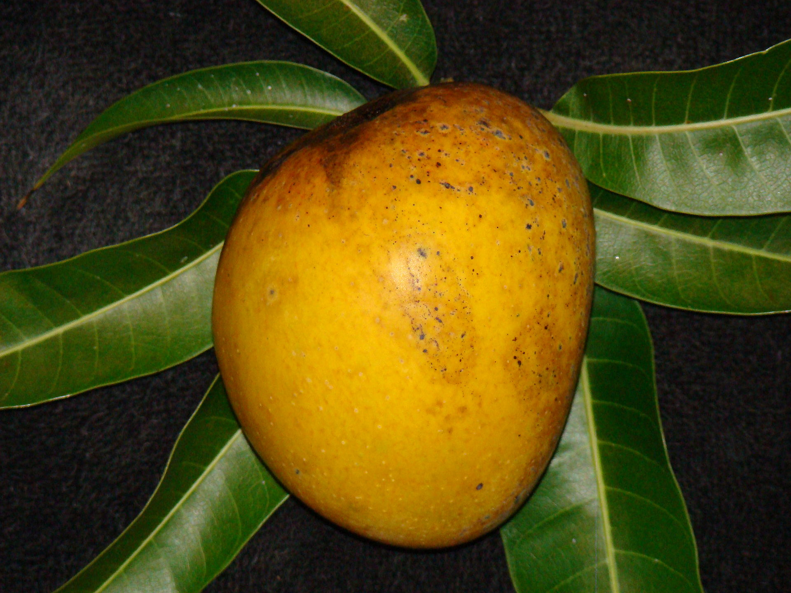

We flew in to Kenya around lunchtime. When we got out of the airport we jumped into a van and headed off into the countryside. Our guide for the trip took us to a small village where he introduced us to a local restaurant/eatery. They let us pick a goat from a herd and then had someone butcher it for us. The guy that butchered it was dressed in traditional Maasai clothing and was really friendly. After he slit the goat's neck he hung it from a tree to let the blood drain into a large bowl. My cousin, who joined me on this trip, were hanging out by the goat and watching it be butchered. After the blood was drained out the butcher guy lifted it up and offered it to us. We weren't really interested in drinking blood and declined. Thinking back on that trip and that moment I now wish that I had tried it. I'm sure that I wouldn't have liked it, but what a story I could have told! They cooked the goat for us right then and we had some very chewy lunch. It was a good start to a memorable trip.
During every trip with HOLA we spent a few weeks out in the 'bush'. That usually meant a several hours long bus drive out into the middle of nowhere, usually somewhere without any electricity. In Kenya we visited a small K-12 Catholic school in the middle of nowhere. We had exchanged emails with them before we came and had brought suitcases full of pens, pencils, and paper. When we got there, after a 6 hour bus drive, they welcomed us by having all the students sing us songs. They also served a delicious bean stew. There were about 10 students from HOLA and we each were paired with a student from the school. We spent the next few days staying with those students. They all lived a little ways away from the school and most rode their bikes in everyday. I don't remember the name of the guy I stayed with, but he was very friendly and we had a lot of fun. Since he was a little older (I think around 16) he shared a small mud house in the back of the main family house with one of his brothers. His room/house consisted of a mud platform bed, which we shared, a small partitioned room with a wood chair, and a door with a padlock. We spent our days after school riding his bike to the local lake where we saw hippos swimming and heard monkeys screaming across the lake. In the evening we sat outside his door in front of his kerosene lamp eating food that one of his younger siblings brought. I remember the first night we ate a wet cornmeal type bread. It was one of the best things I have eaten. It's funny how the simplest things and experiences can be the best. Another night he took me to meet his grandparents who lived a short walk away. They served me a warm drink that was also really good. I didn't know what it was at the time, but now I know that it was sweet black tea with milk. Another memorable thing from staying in that tiny village were the mangoes. Everyone had a few mango trees around their house and you could just go and pick as many mangos as you wanted. These weren't the mushy gross mangoes you get in the states either; fresh off the tree mangoes are sweet and firm like an apple-they were SO good. The student that my cousin stayed with loved mangoes. He told us that sometimes he ate so many mangoes that his stomach would hurt.